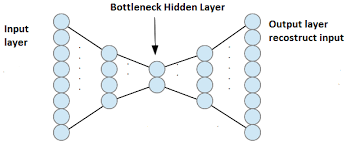
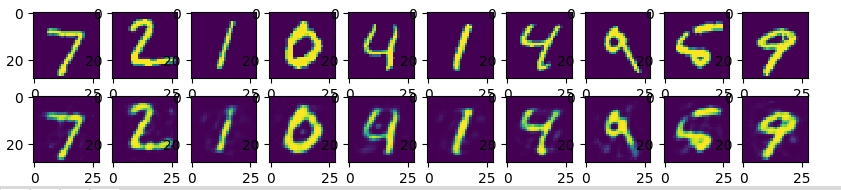

Autoencoders
Autoencoders have been one of those things that I've always heard about, but never used them. They seems to be quite big in the online learning (deep learning courses like the one from Hinton) and even in the books (I am looking at you, Goodellow) but at the same time, I have yet to find someone who has used them to do something useful (I am talking about the vanilla version, not the variational ones which are almost a different things). I've also heard that they are a form of unsupervised learning, a way of getting good representation of objects in an unsupervised way. So, I decided to implement a simple autoencoder and see what's the fuss about. I also thought that this might be a good Tensorflow exercise (I have been using PyTorch on the last few months, a library I am really loving).
On its basic form, autoencoders are a simple concept. The idea here is to map the input to output, via a neural network. A simple choice of a neural network, might be a fully connected neural network, with a hidden layer and an output layer, where the number of units in the output layer is the same as tbe number of units (features) in the input layer. A visual representation of an autoencoder looks:

Of course, knowing that going deeper is better, it is possible to not limite the network on a single hidden layer. You can go as deep as you want. A simple two layer autoencoder looks:
In fact, it is possible to change the architecture of the network to something more interesting, like a convolutional neural network. While, I am not going to cover today the Convolutional Autoencoder, it is essentially the same thing as a normal CNN, but instead of putting a final layer where you do some classification, you put a final layer that maps input to output (here is the auto in the autoencoder). A lot of knowledge from the usual neural nets can be transferred here. Obviously, we are not interested in the output (after all, in the best case, it is the same as the input), but we might be interested in the hidden representation, and at times, the features there might be better features than the original ones.
Enough with words though, let's see how things go in the code. We are going to use the MNIST dataset for this experiment. First, we do the neccessary imports and load the dataset:
Then, we define the parameters for the learning rate, number of epochs we are going to train the network, the batch size and finally we define a placeholder for the dropout.
Next, we define the number of units for each layer. MNIST images size are 28 by 28, so we have 784 units in the input layer, we arbitrarily decided to have 2048 units in the first hidden layer and 256 neuros in the second hidden layer. The numbers here are totally arbitrary, and for best results, it is needed to tune these parameters using a validation set. Then, we define and initialize the weights and biases of the net. We also define a l2 regularizer (the scale of it should be tuned using a validation set.
Now, we go to the main part. We define a function for the encoder and the decoder. They are symmetric functions, where the decoder function can be thought as the inverse of the encoder function. An interesting thing that I found, is that it seems that it is hard to make autoencoders work with hyperbolic tangent and the ReLU (and ReLU-like) activation functions. I don't have a good explanation for it right now, it just seems to not work straightforward. There are papers that deal with the situtaion, and Yoshua Bengio's lab reported that they made autoencoders work with the ReLU function. Anyway, in the code, the encoder/decoder functions is quite simple, you multiply the vector of neurons with the matrix of weights, add the bias term and apply a nonlinear activation function. Seems simple.
We continue by defining the model, the loss function and the optimizer. For loss function, we choose the least square loss function. Considering that we are trying to predict values that can take place in a large range of values, the least square cost function makes perfect sense. Finally, for the optimizer, we choose the Adam optimizer (my default choice for everything in neural networks) with 3e-4 learning rate and the other default parameters.
All that remains is training the neural network. On Tensorflow, that means definind the session, number of epochs and finally providing the training data and the dropout parameter (which we defined as placeholders where we defined the graph. We also save the internal representation of the final encoder layer.
We look at the visual representation of the net. If the output looks quite similar to the input, than we have done a good job.
The results seem very good and you can hardly find the difference between the original images and the reconstructed ones. However, when I tried to do k-means clustering, I still found that the results were slightly better if we use the original pixels, rather than the features from the encoder network. This comes a bit as a surprise to me, but to be fair, autoencoders are not exactly like CNN where you can get great results without doing much work. I think that in order to get good results in this experiment, a convolutional autoencoder is needed. And even there, the results can be not as impressive as we would hope for, which at the moment makes the usefuleness of autoencoders a bit dubious.